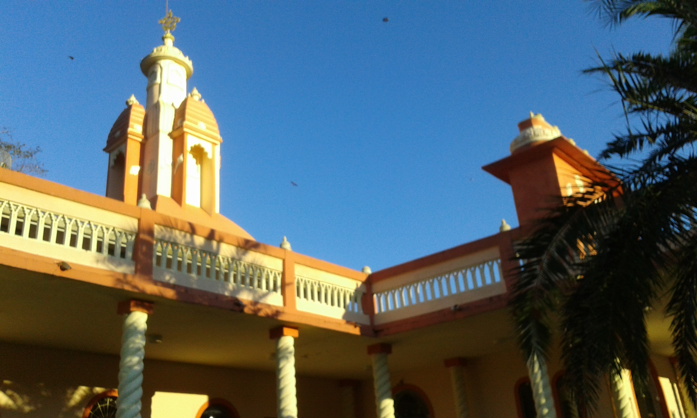

इस प्रकार इन उत्कृष्ट गुरुओं और उनकी श्रोताओं को मान्यता देना, कोई заслूकी नहीं थी।
मैंने इसे एक कर्तव्य के रूप में महसूस किया, और इसके बाद मैं व्याख्यान देने के लिए यात्रा करने लगा, जब तक मुझे एक गंभीर समस्या का एहसास नहीं हुआ।
हर तरफ से अयोग्य लोग इंटरनेट पर शिक्षाएँ सुन रहे थे और पढ़ रहे थे और उन्हें नकल कर रहे थे (और विकृत कर रहे थे)।
तो मेरी जिम्मेदारी थी रुक जाना। क्योंकि अगर नहीं तो मैं मूर्खों को मूर्ख बना रहा होता। बुद्धिमान हमेशा बुद्धिमानों को ही बनाते हैं।
